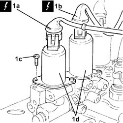

2127C52 EVEN AND UNEVEN GEAR ENGAGEMENT SOLENOID VALVES - R.R.
- Path
- Procedures > 21 GEARBOX UNIT > 2127 ELECTRO-HYDRAULIC SELECTION. GEARBOX EXTERNAL. CONTROLS > 2127C hydraulic gear selection system > 2127C52 EVEN AND UNEVEN GEAR ENGAGEMENT SOLENOID VALVES - R.R.
- Kind
- repair procedure (removal / refitting; the operation number is the code)
- Applies to
- engines: 1.2 8v; all production periods
- Interactive page
- https://sloeber94.github.io/elrnDB-fPnd/en/#/2752683
Applies to: engines: 1.2 8v; all production periods
 Removing
Removing
 Refitting
Refitting5530B56 BATTERY DRIP TRAY COVER - R.R.
5530B52 Battery DRIP TRAY/SUPPORT - R.R.
2127C40 hydraulic speed selection hydraulic actuator unit and clutch - r r
1. Disconnect the electrical connections (1a) and (1b), undo the bolts (1c) and remove the even and odd gear engagement solenoids (1d).
 | Name | Connector |
|---|---|---|
1a | Solenoid 1 gear engagement | L51 |
| Name | Connector |
|---|---|---|
1b | Solenoid 2 gear engagement | L52 |
Remove the O-rings from the seats of the even and odd gear engagement solenoids.

Applies to: engines: 1.2 8v; all production periods
Refitting
RemovingFit a new O-ring in the specific groove on the seating of the even and odd gear engagement solenoids.
Fit the even and odd gear engagement solenoids in their seatings and tighten the fixing bolts.
Connect the electrical connections of the even and odd gear engagement solenoids.
| Name | Connector |
|---|---|---|
- | Solenoid 1 gear engagement | L51 |
| Name | Connector |
|---|---|---|
- | Solenoid 2 gear engagement | L52 |
2127C40 hydraulic speed selection hydraulic actuator unit and clutch - r r
0010T21 coolant check density and top up if necessary
0010T48 hydraulic system for gearbox with hydraulic selection bleed air
5530B52 Battery DRIP TRAY/SUPPORT - R.R.
5530B56 BATTERY DRIP TRAY COVER - R.R.
Connect the Examiner diagnostic instrument and initialise the gear engagement/selection positions, checking that the engagement travel is correct.
Topics linked from this page (7)
- 0010T21 coolant check density and top up if necessary
- 0010T47 hydraulic system fluid for gearbox with hydraulic selection check level and top up if necessary
- 0010T48 hydraulic system for gearbox with hydraulic selection bleed air
- 2127C40 hydraulic speed selection hydraulic actuator unit and clutch - r r
- 5530B10 battery - r+r
- 5530B52 Battery DRIP TRAY/SUPPORT - R.R.
- 5530B56 BATTERY DRIP TRAY COVER - R.R.